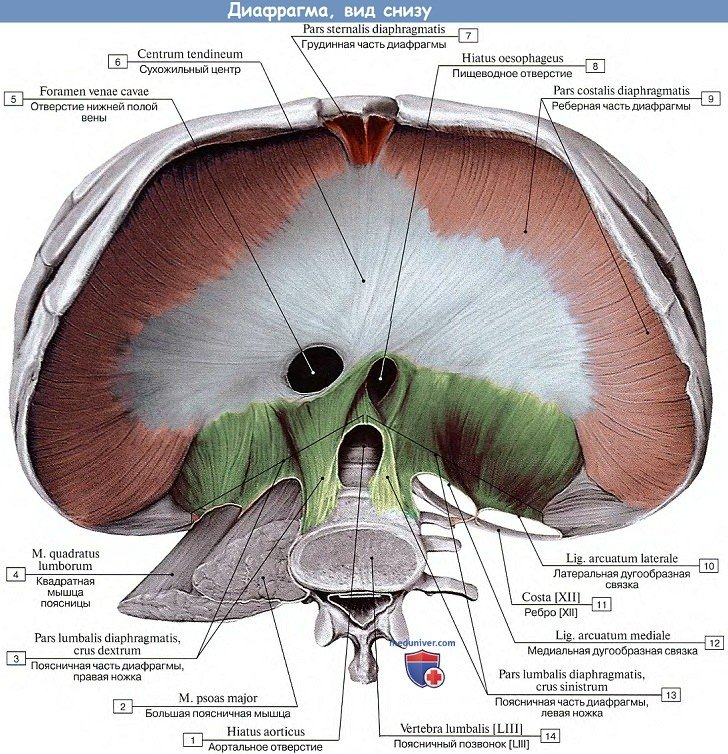
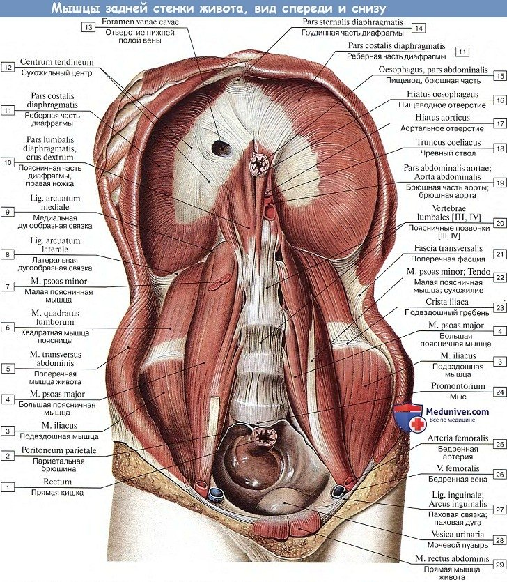
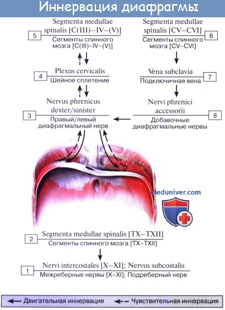

🔬 Диафрагма, diaphragma, представляет плоскую тонкую мышцу, m. phrenicus, куполообразно изогнутую, покрытую сверху и снизу фасциями и серозными оболочками. Мышечные ее волокна, начавшись по всей окружности нижней апертуры грудной клетки, переходят в сухожильное растяжение, занимающее середину диафрагмы, centrum tendineum. По месту отхождения волокон в мышечном отделе грудобрюшной преграды различают поясничную, реберную и грудинную части.
🔬 The diaphragm, diaphragma, is a flat thin muscle, m. phrenicus, dome-shaped, covered above and below by fascia and serous membranes. Its muscle fibers, originating around the entire circumference of the lower aperture of the thorax, pass into a tendon stretch that occupies the center of the diaphragm, centrum tendineum. Based on the origin of the fibers in the muscular part of the thoracoabdominal barrier, lumbar, costal and sternal parts are distinguished.
🔬 Диафрагма, diaphragma, жалпақ жұқа бұлшықет, m. phrenicus, күмбез тәріздес иілген, үстінен және астынан фасциялар мен серозды қабықтармен қапталған. Оның бұлшықет талшықтары кеуде қуысының төменгі тесігінің бүкіл шеңберінен басталып, диафрагманың ортасында орналасқан centrum tendineum деп аталатын сіңірлік созылуға ауысады. Бұлшықет бөлігінде талшықтардың шығу орнына қарай бел, қабырға және төс бөліктері ажыратылады.
Обе ножки диафрагмы оставляют между собой и позвоночным столбом треугольный промежуток, hiatus abrticus, через который проходит аорта с лежащим позади нее ductus thoracicus. Край этого отверстия окаймлен сухожильной полоской, благодаря чему сокращение диафрагмы не отражается на просвете аорты. Поднимаясь кверху, ножки диафрагмы сходятся друг с другом впереди аортального отверстия и затем несколько влево и кверху от него снова расходятся, образуя отверстие, hiatus esophageus, через которое проходят пищевод и сопровождающие его оба nn. vagi. Hiatus esophageus окаймлено мышечными пучками, играющими роль жома, регулирующего продвижение пищи. Между мышечными пучками каждой из ножек диафрагмы образуются щели, через которые проходят nn. splanchnici, v. azygos (слева v. hemiazygos) и симпатический ствол.
Both crura of the diaphragm leave a triangular space between themselves and the vertebral column, hiatus aorticus, through which the aorta passes with the ductus thoracicus lying behind it. The edge of this opening is bordered by a tendon strip, so that the contraction of the diaphragm does not affect the lumen of the aorta. Rising upward, the crura of the diaphragm converge with each other in front of the aortic opening and then, somewhat to the left and above it, diverge again, forming an opening, hiatus esophageus, through which the esophagus and both accompanying nn pass. vagi. The hiatus esophageus is bordered by muscle bundles that act as a sphincter regulating the movement of food. Between the muscle bundles of each of the crura of the diaphragm, gaps are formed through which nn pass. splanchnici, v. azygos (left v. hemiazygos) and the sympathetic trunk.
Диафрагманың екі аяғы өздері мен омыртқа бағанасы арасында үшбұрышты аралық қалдырады, hiatus abrticus, ол арқылы аорта және оның артында жатқан ductus thoracicus өтеді. Бұл тесіктің шеті сіңірлік жолақпен қоршалған, сондықтан диафрагманың жиырылуы аортаның кеңістігіне әсер етпейді. Жоғары көтеріле отырып, диафрагма аяқтары аорта тесігінің алдында бір-біріне жақындасады, содан кейін одан сәл солға және жоғары қарай қайтадан ажырайды, hiatus esophageus деп аталатын тесікті құрайды, ол арқылы өңеш және оны қосатын екі nn өтеді. vagi. Hiatus esophageus тамақтың қозғалысын реттейтін сфинктер рөлін атқаратын бұлшықет шоғырларымен қоршалған. Диафрагманың әр аяғының бұлшықет шоғырлары арасында nn өтетін саңылаулар құрылады. splanchnici, v. azygos (сол жақта v. hemiazygos) және симпатикалық діңгек.

Реберная часть, pars costalis, начинаясь от хрящей VII—XII ребер, восходит в сторону сухожильного центра.
The costal part, pars costalis, originating from the cartilages of the VII-XII ribs, ascends towards the tendon center.
Қабырға бөлігі, pars costalis, VII-XII қабырғалардың шеміршектерінен басталып, сіңірлік орталыққа қарай көтеріледі.

Грудинная часть, pars sternalis, отходит от задней поверхности мечевидного отростка грудины к сухожильному центру. Между pars sternalis и pars costalis вблизи грудины имеется парная треугольная щель, trigonum sternocostal, через которую проникает нижний конец a. thoracica interna (a. epigastrica superior).
The sternal portion, pars sternalis, extends from the posterior surface of the xiphoid process of the sternum to the tendinous center. Between pars sternalis and pars costalis near the sternum there is a paired triangular gap, trigonum sternocostal, through which the lower end of the internal thoracic artery (superior epigastric artery) passes.
Кеуде бөлігі, pars sternalis, кеуде сүйегінің мечевид өсінің артқы бетінен сіңірлік орталыққа дейін созылады. Pars sternalis және pars costalis арасында, кеуде сүйегіне жақын жерде, trigonum sternocostal деп аталатын жұпты үшбұрышты саңылау бар, ол арқылы ішкі кеуде артериясының (жоғарғы эпигастральды артерия) төменгі ұшы өтеді.

Другая парная щель больших размеров, trigonum lumbocostal, находится между pars costalis и pars lumbalis. Щель эта, соответствующая существующему в эмбриональной жизни сообщению между грудной и брюшной полостью, сверху прикрыта плеврой и fascia endothoracica, а снизу — fascia subperitonealis, забрюшинной клетчаткой и брюшиной. Через нее могут проходить так называемые диафрагмальные грыжи.
Another larger paired gap, trigonum lumbocostal, is located between pars costalis and pars lumbalis. This gap corresponds to the embryonic communication between the thoracic and abdominal cavities and is covered superiorly by the pleura and endothoracic fascia, and inferiorly by the subperitoneal fascia, retroperitoneal tissue and peritoneum. So-called diaphragmatic hernias can pass through it.
Тағы бір үлкен жұпты саңылау, trigonum lumbocostal, pars costalis және pars lumbalis арасында орналасқан. Бұл саңылау эмбриондық өмірде кеуде және құрсақ қуыстары арасындағы байланысқа сәйкес келеді және жоғарыдан плевра және fascia endothoracica, ал төменнен fascia subperitonealis, ретроперитонеалды ұлпа және брюшинамен қапталған. Ол арқылы диафрагмалық грыжалар өте алады.
Несколько кзади и вправо от средней линии в сухожильном центре находится четырехугольное отверстие, foramen venae cavae, через которое проходит нижняя полая вена. Как было указано, диафрагма имеет куполообразную форму, но высота купола несимметрична на обеих сторонах: правая его часть, подпираемая снизу объемистой печенью, стоит выше, чем левая.
Slightly posterior and to the right of the midline in the tendinous center is a quadrangular opening, foramen venae cavae, through which the inferior vena cava passes. As noted, the diaphragm has a dome-shaped form, but the height of the dome is asymmetrical on both sides: its right portion, supported below by the voluminous liver, is higher than the left.
Ортаңғы сызықтан сәл артқа және оңға қарай сіңірлік орталықта foramen venae cavae деп аталатын төртбұрышты тесік орналасқан, ол арқылы төменгі қуыс венасы өтеді. Жоғарыда айтылғандай, диафрагма күмбез тәрізді пішінге ие, бірақ күмбездің биіктігі екі жағында да симметриялы емес: оның оң жағы, төменнен үлкен бауырмен қолдау көрсетілген, сол жағынан биік.
Функция. Диафрагма сокращается при вдыхании, купол ее уплощается, и она опускается. Благодаря опущению диафрагмы достигается увеличение грудной полости в вертикальном направлении, что имеет место при вдохе. (Инн. CIII-V N. phrenicus, VII—XII nn. intercostales, plexus solaris.)
Function. The diaphragm contracts during inhalation, its dome flattens, and it descends. The descent of the diaphragm results in an increase in the vertical dimension of the thoracic cavity, which occurs during inspiration. (Innervation: C3-C5 via the phrenic nerve, T7-T12 via intercostal nerves, and the solar plexus.)
Функциясы. Диафрагма тыныс алу кезінде жиырылады, оның күмбезі жазылады және төмен түседі. Диафрагманың төмендеуі кеуде қуысының тік өлшемінің ұлғаюына әкеледі, бұл дем алу кезінде болады. (Иннервациясы: C3-C5 phrenicus жүйкесі арқылы, T7-T12 қабырғааралық жүйкелер арқылы және күн ұйыры.)